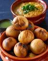

LITTI-CHOKHA

Litti-Chokha is an Indian food from state of Bihar. It is known for its spicy ,smokey taste.
It is also a state food symbol for Bihar.
Ingredints:-
For litti:-
- wheat flour
- gram flour
- salt,chilli and spices
- garlic and onion
- oil
For chokha:-
- egg plant
- salt,spices and chilli
- garlic, coriander and onion
Steps:-
- make dough from wheat flour
- mix gram flour with chopped onion and garlic
- add salt, chilli and other spices as you like
- take a small round dough and stuff gram flour mixture in it and close it making it again round
- bake this round stuffed litti seasoned with oil
- Now for the chokha part, put egg plant on burner stove and cook it till it get soft cooked
- mash the egg plant and add chopped onion and garlic in it.
- add chopped coriander and chilli
- add salt and spices to your liking
- finally you can eat baked litti with mashed eggplant chokha
Back to Main menu